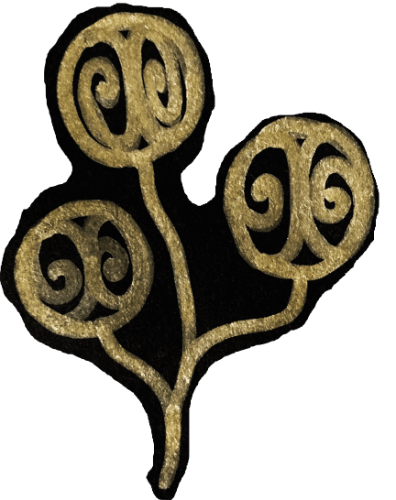

<!-- This Source Code Form is subject to the terms of the Mozilla Public
   - License, v. 2.0. If a copy of the MPL was not distributed with this
   - file, You can obtain one at http://mozilla.org/MPL/2.0/. -->

<html>
<head>
  <meta charset="UTF-8">
  <title>They Tell a Tale</title>
  <style>
    @import url('https://fonts.googleapis.com/css?family=Vollkorn');
    @import url(http://fonts.googleapis.com/earlyaccess/cwtexfangsong.css); /* 仿宋體 */
  </style>
  <link rel='stylesheet' type='text/css' href='../css/mobile.css'>
  <link rel='stylesheet' type='text/css' href='../css/common.css'>
  <link rel="icon" href="../images/they-tell-a-tale.ico" />
</head>
<body>
  <div class="videoWrapper">
    <iframe src="https://www.youtube.com/embed/-g9xgyFhrSQ" frameborder="0" allowfullscreen></iframe>
  </div>
  <!-- Information for the they-tell-a-tale -->
  <div class='footer english'>
    <div>
      
      <span class='chinese'>生而為人的故事</span><span>Life as an Individual</span>
    </div>
    <div>
      
      <a target='_blank' href='https://www.facebook.com/tzchienfans/'>
        TzChien<span class='chinese'>慈謙</span>
      </a>
    </div>
    <div class='author'>
      
      Designed By <a target='_blank' href='http://chunminchang.github.io/'>Chun-Min Chang</a>
      <a target='_blank' href='https://github.com/ChunMinChang/they-tell-a-tale'>Fork</a>
    </div>
  </div>
</body>
</html>
